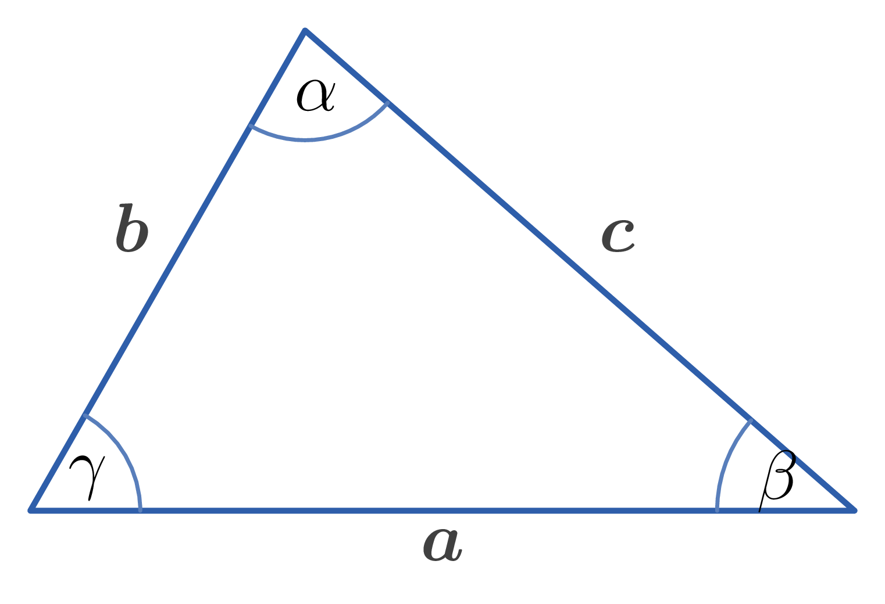
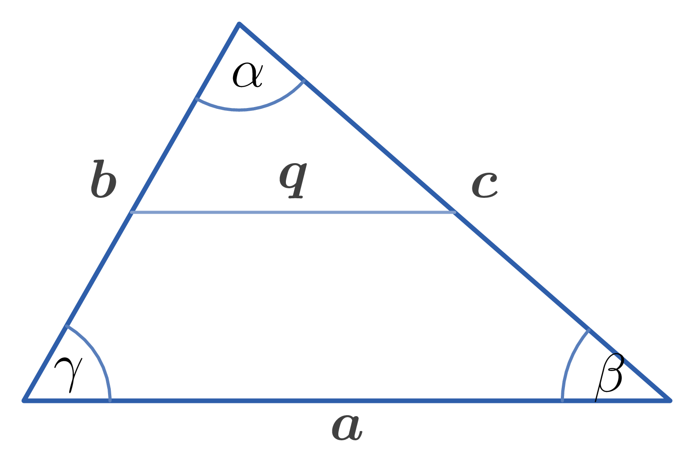
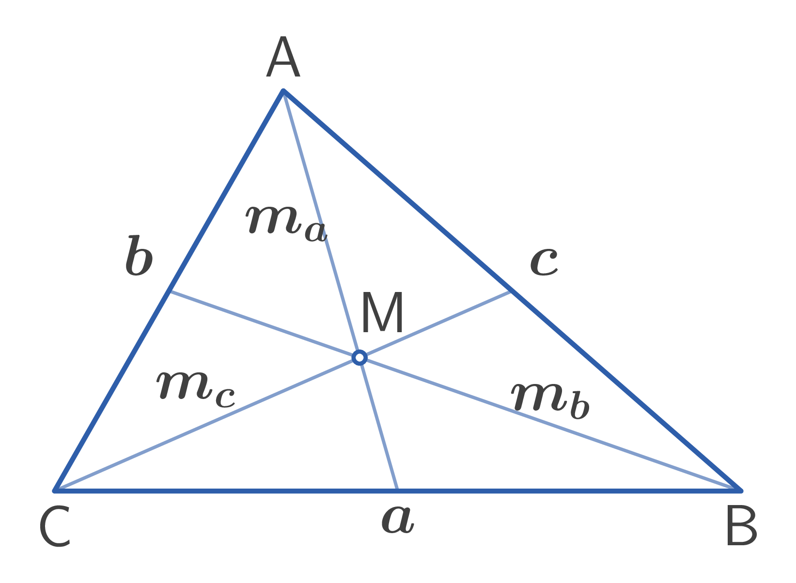

Sides of a triangle: $a, b, c$
Semiperimeter: $p = \dfrac{a+b+c}{2}$
Angles of a triangle: $\alpha, \beta, \gamma$
Altitudes to the sides $a, b, c$: $h_{a}, h_{b}, h_{c}$
Medians to the sides $a, b, c$: $m_{a}, m_{b}, m_{c}$
Bisectors of the angles $\alpha, \beta, \gamma$: $t_{a}, t_{b}, t_{c}$
Radius of circumscribed circle: $R$
Radius of inscribed circle: $r$, Area: $S$

1. Sum of angles in a triangle: $$\alpha + \beta + \gamma = 180^{\circ}$$
2. Triangle Inequality (sum of two sides): $$a + b \gt c, \quad b + c \gt a, \quad a + c \gt b$$
3. Triangle Inequality (difference of two sides): $$|a - b| \lt c, \quad |b - c| \lt a, \quad |a - c| \lt b$$
4. Midline of a triangle: $$q = \dfrac{a}{2}, \quad q \parallel a$$ where $q$ is the midline parallel to side $a$ (as shown in Figure 14).

5. Law of Cosines: $$\begin{aligned} &a^{2} = b^{2} + c^{2} - 2bc \cos \alpha \\\\ &b^{2} = a^{2} + c^{2} - 2ac \cos \beta\\\\ &c^{2} = a^{2} + b^{2} - 2ab \cos \gamma \end{aligned}$$
6. Law of Sines: $$\dfrac{a}{\sin \alpha} = \dfrac{b}{\sin \beta} = \dfrac{c}{\sin \gamma} = 2R$$ where $R$ is the radius of the circumscribed circle.
7. Radius of circumscribed circle: $$R = \dfrac{a}{2 \sin \alpha} = \dfrac{b}{2 \sin \beta} = \dfrac{c}{2 \sin \gamma} = \dfrac{bc}{2h_{a}} = \dfrac{ac}{2h_{b}} = \dfrac{ab}{2h_{c}} = \dfrac{abc}{4S}$$
8. Radius of inscribed circle: $$\begin{aligned} &r^{2} = \dfrac{(p-a)(p-b)(p-c)}{p}\\\\ &\dfrac{1}{r} = \dfrac{1}{h_{a}} + \dfrac{1}{h_{b}} + \dfrac{1}{h_{c}}\end{aligned}$$
9. Half-angle formulas for a triangle: $$\begin{aligned} &\sin \dfrac{\alpha}{2} = \sqrt{\dfrac{(p-b)(p-c)}{bc}}\\\\ &\cos \dfrac{\alpha}{2} = \sqrt{\dfrac{p(p-a)}{bc}} \\\\ &\tan \dfrac{\alpha}{2} = \sqrt{\dfrac{(p-b)(p-c)}{p(p-a)}}\end{aligned}$$
10. Altitudes of a triangle: $$\begin{aligned} &h_{a} = \dfrac{2}{a} \sqrt{p(p-a)(p-b)(p-c)} \\\\ &h_{b} = \dfrac{2}{b} \sqrt{p(p-a)(p-b)(p-c)}\\\\ &h_{c} = \dfrac{2}{c} \sqrt{p(p-a)(p-b)(p-c)}\end{aligned}$$
11. Relationships between altitudes and sides: $$\begin{aligned} h_{a} &= b \sin \gamma = c \sin \beta \\ h_{b} &= a \sin \gamma = c \sin \alpha \\ h_{c} &= a \sin \beta = b \sin \alpha \end{aligned}$$
12. Medians of a triangle: $$\begin{aligned} m_{a}^{2} &= \dfrac{b^{2}+c^{2}}{2} - \dfrac{a^{2}}{4} \\ m_{b}^{2} &= \dfrac{a^{2}+c^{2}}{2} - \dfrac{b^{2}}{4} \\ m_{c}^{2} &= \dfrac{a^{2}+b^{2}}{2} - \dfrac{c^{2}}{4} \end{aligned}$$

13. Property of the centroid (Figure 3): $$\begin{aligned} AM &= \dfrac{2}{3}m_{a} \\ BM &= \dfrac{2}{3}m_{b} \\ CM &= \dfrac{2}{3}m_{c} \end{aligned}$$
14. Lengths of angle bisectors: $$\begin{aligned} t_{a}^{2} &= \dfrac{4bcp(p-a)}{(b+c)^{2}} \\ t_{b}^{2} &= \dfrac{4acp(p-b)}{(a+c)^{2}} \\ t_{c}^{2} &= \dfrac{4abp(p-c)}{(a+b)^{2}} \end{aligned}$$
15. Area of a triangle: $$\begin{aligned} &S = \dfrac{ah_{a}}{2} = \dfrac{bh_{b}}{2} = \dfrac{ch_{c}}{2} \\\\ &S = \dfrac{ab \sin \gamma}{2} = \dfrac{ac \sin \beta}{2} = \dfrac{bc \sin \alpha}{2} \\\\ &\text{(Heron's Formula)}\\ &S = \sqrt{p(p-a)(p-b)(p-c)} \\\\ &S = pr \\\\ &S = \dfrac{abc}{4R} \\\\ &S = 2R^{2} \sin \alpha \sin \beta \sin \gamma \\\\ &S = p^{2} \tan \dfrac{\alpha}{2} \tan \dfrac{\beta}{2} \tan \dfrac{\gamma}{2} \end{aligned}$$